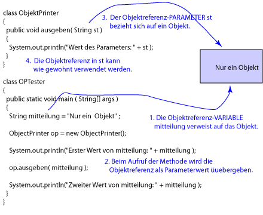

Antwort:
Erster Wert vonmitteilung: Nur ein Objekt Wert des Parameters: Nur ein Objekt Zweiter Wert vonmitteilung: Nur ein Objekt
Erster Wert vonmitteilung: Nur ein Objekt Wert des Parameters: Nur ein Objekt Zweiter Wert vonmitteilung: Nur ein Objekt

Das Programm funktioniert wie Sie es erwarten.
Die Abbildung zeigt, was passiert.
Die main() Methode erzeugt ein Stringobjekt,
das die Zeichen "Nur ein Objekt" enthält.
Eine Referenz auf dieses Objekt wird in der Objektreferenzvariablen mitteilung gehalten.
Denken Sie daran, dass eine Referenz auf ein Objekt der Weg ist, es im Arbeitsspeicher zu finden. Wenn eine Methode eine Referenz auf ein Objekt hat, dann kann sie dieses Objekt verwenden.
Wenn die ausgeben() Methode aufgerufen wird,
wird die Referenz auf das Objekt als Wert
an den Parameter übergeben.
Das ist genauso wie bei der Call-By-Value Übergabe eines primitiven Datentyps,
aber jetzt ist der Wert eine Referenz.
Die aufgerufene Methode ausgeben() verwendet ihren formalen Parameter
st, um das Objekt zu finden.
Wenn ausgeben() den Wert der in st enthalten ist ändert,
wird das das aktuelle Objekt ändern?